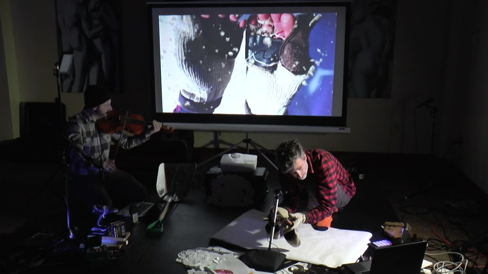

Summer (blackflies and other bugs)
PROJECT DESCRIPTION
Insects are an essential feature of the rural imaginary, but their role is not benign. From early British depictions of India[1] to 20th century portrayals of North Ontario,[2] perseverance against pernicious insects supports the colonial narrative of claiming the right to unceded territory by “taming” the land. These representations shape the social production of rural space[3] and sustain ongoing projects of settler-colonialism. Counter-portrayals of the insect outside of these tropes are difficult to achieve, since settler ontologies and listening practices do not readily support intersubjective encounters with non-human entities.[4]
In the face of this dilemma, this work uses biomimicry and a closed autopoietic interface to create the possibility for a human-insect experience of rural space outside of frontier narratives.
Two dimmable LED panels are placed in glass jars, some distance apart from each other, with a microphone and camera trained on each. A human participant beats a lightweight paddle modeled on the wing of a fly. The panels respond to analyses of both the insect activity on the panels and the frequency of the human participant’s wing beats in relationship to a target frequency, and adjusts the relative brightness of the two panels. The human participant attempts to keep both panels equally bright by adjusting the speed of their movements. Audio from all microphones is mixed and processed for a virtual audience, and is inaudible to both human and insect participants in the system.
Recent research that shows that fruit flies only exhibit positive phototaxis (attraction to light) when in flight.[5] This biomimicry imitates a physical-spatial dynamic, as well as a more basic tropism. Based on Roger Callois’ theory that the imitation of leaves and twigs constitutes an innate inclination to assimilate into one’s surroundings,[6] Elizabeth Grosz describes “insect space” in which people “renounce their right to occupy a perspectival point, abandoning themselves to being located, for themselves, as others, from the point of view of others.”[7]
This rejection of human perspectival primacy is also aligned with Katherine Hayles analysis of autopoietic systems in which
there is only the circular interplay of the processes as they continue to realize their autopoiesis, always operating in the present moment and always producing the organization that produces them.[8]
By creating an interface that sustains a shared orientation and embodied response to isolated units of artificial light, this piece produces a unique encounter between human, insect, and rural locality.
PROGRAM NOTES
Summer (blackflies and other bugs) is a site-specific intermedia performance that uses homemade instruments, digital signal processing, and interactive electronics to create a closed-loop system for a human-insect encounter with rural space. While human-insect interaction is a consistent feature of the rural imaginary, it is typically represented within settler narratives of conquest and perseverance. In an effort to engage insects outside of these frameworks, this piece places two light sources in a pasture in rural Vermont. A human participant produces frequencies by beating wing-like paddles in response to the intensity of the light sources. The system also measures the presence of insects attracted to the light, and adjusts the intensity of both lights in response to insect and human activity. Human and insect sound is captured and processed for a virtual audience. Through biomimicry and autopoeisis, this system offers a unique opportunity for engaging insect spatial practices outside of human-oriented pioneer narratives of rural space.
PERFORMANCE REQUIREMENTS
Given the site-specificity of the work, this performance will be streamed from or pre-recorded in rural Vermont. Therefore there are no performance requirements at the conference site.
MEDIA
Please note that our proposal is for a new project. Thus, the media (video) is documentation from a past project that best exemplifies the approach and style for Summer (blackflies and other bugs).

▶Citations
- ↩Mukherjee, N. (2020). Spatial Imaginings in the Age of Colonial Cartographic Reason: Maps, Landscapes, Travelogues in Britain and India. Taylor &Francis.
- ↩Acorn, J. (2014). Bug songs are rarely about bugs. American Entomologist, 60(1), 64–65.
- ↩Halfacree, K. (2006). Rural space: constructing a three-fold architecture. Handbook of Rural Studies, 44–62.
- ↩Robinson, D. (2020). Hungry Listening: Resonant Theory for Indigenous Sound Studies. U of Minnesota Press.
- ↩Gorostiza, E. A., Colomb, J., & Brembs, B. (2016). A decision underlies phototaxis in an insect. Open Biology, 6(12), 160229.
- ↩Caillois, R., & Shepley, J. (1984). Mimicry and legendary psychasthenia. October, 31, 17–32.
- ↩Grosz, E. (2001). Architecture from the outside: Essays on virtual and real space. MIT press.
- ↩Hayles, N. K. (2008). How we became posthuman: Virtual bodies in cybernetics, literature, and informatics. University of Chicago Press.